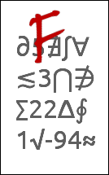

Documentation for novel document class
Documentation version: 1.38.
1. Overview
Read This: The novel class has a lot of possible settings, and a command structure that differs from other document classes in many ways. So, there is a lot of documentation. But you probably do not have to read most of it.
Before you panic, look at the novel-example.tex demonstration file. It uses mostly default settings. See how easy that can be?
1.1 Description
The novel document class is intended for writers of original fiction, such as novels and collections of short stories. For this purpose, it provides easy-to-use settings that are pre-configured for the most common book Trim Sizes, according to publishing standards. The class uses the advanced typographic features of LuaTeX, fontspec, and microtype, and has the built-in capability to produce files compliant with PDF/X. All these capabilities are accessed via simple front-end commands that do the work for you, thereby reducing the learning curve.
PDF/A and other formats pertaining to digital publication (e-books) are not supported, and never will be. If that is what you need, then this is the wrong document class for you.
Bibliography, Floats, Tables, Math Mode, automatic generation of title page and table of contents... Forget them! Many of the TeX features used for academic work have reduced functionality, or are entirely disabled, in novel class. There is a reason for this. If you need them, find another document class. There is minimal support for page-bottom footnotes, but good support for raster (not vector) images.
The class makes typographic choices that are best suited to original fiction, where you can easily resolve problematic typesetting by re-writing your own work. In particular, there is no effort to control widows and orphans.
If you are ready to typeset your great detective novel, or your collection of sci-fi short stories, then novel is for you.
1.1.1 Licensing
The novel document class, including software, examples, documentation and supporting images, is distributed under the terms of the LaTeX Project Publc License, either version 1.3c of this license or (at your option) any later version. The exception is the included font NovelDeco.otf, which is distributed under terms of the SIL Open Font License, v.1.1. Small portions of the software use code placed on the Internet under terms of Creative Commons 3.0-by-sa license; attributions are provided at the places where such code is used.
To ensure that your book may be sold commercially, be careful to use only fonts that allow commercial usage. That may exclude some of the fonts in the LaTeX font catalog.
1.1.2 Installation
Your TeX installation must be based on TeXLive 2016 or later. This is the case if you have manually installed TeXLive directly from its site, or if you are using MiKTeX. However, if you are on Linux and your distro is not the latest and greatest, the distribution may be based on TeXLive 2015 or earlier. Then, you will not be able to use novel.
The TeX code will be placed in (texroot)/tex/lualatex/novel/, the custom font will be placed in (texroot)/fonts/opentype/novel/, and the documentation will be placed in (texroot)/doc/lualatex/novel/.
The novel class can now be installed like any other TeX package, through your distribution's package manager. The installation will provide the code, documentation, and a custom font.
Fonts from the libertinus package are required, and may be installed via your TeX package manager. Note that a novel document does not request the package! Instead, if you have not manually specified which fonts to use, it will automatically look for pre-installed libertinus fonts (or Linux Libertine O) as defaults.
Since you will be using LuaTeX, the font cache will be updated to include the newly-installed fonts, the next time you run this software. However, I recommend that you force a full cache refresh, by locating the luatex-cache directory, and discard its contents. The cache may be anywhere (sadly), so you will have to hunt for it. If you have never used LuaTeX before, it may not exist. If there are any updates to the fonts, then a manual cache refresh is necessary.
1.1.3 Credits
My method of "programming" (note the scare quotes) largely involves looking for solutions on the Internet, then using or modifying code provided by others with allowable license terms. Thus, within the TeX code files, you will find places where small or large pieces of code are the work of someone else, released by them for LaTeX purposes. Names or organizations are credited where the code is used.
Various clipart graphics were obtained from openclipart.org. The NovelDeco.otf font is partly derived from [Linux] Libertine O, using FontForge.
1.1.4 Useful Tools
Word Processor: I use LibreOffice for this (version 5.3 or later preferred), but you can use most other word processors.
Write your wonderful novel using the word processor, with the same page layout that you will eventually use for TeX, and with the same font and point size. However, don't use italics or any other font effect that requires TeX code. This will give you a rough idea of how things look, and how many pages are used. You will still need to do final editing within TeX, where you will add codes for italics and other effects, and perhaps re-write paragraphs so that they look better.
A good word processor will have a high-end spelling checker, and perhaps some grammatical checks. It can apply “smart quotes” and other character substitutions on-the-fly. If you save the result as plain text with utf-8 encoding then it can be used with the novel document class. Beware of saving plain text in Windows native encoding.
Note that some word processors interpret two hyphens as an em-dash. In TeX, it's three hyphens. As long as the substitution is made, things will be OK.
Adobe Reader: Before sending your PDF file anywhere, you should always open it in Adobe Reader, and inspect it. If you are on a system that does not have that software, then find a friend who has it (different platform OK).
The reason is that some other PDF readers will not object to problem files, but Adobe Reader will complain. Almost certainly, the recipient of your PDF will open it in a commercial program (perhaps Adobe Acrobat Pro), inspect it, and add manufacturing information at the bottom of the last blank page. It is that revised PDF file that will go to the printing machine.
How to inspect your finished PDF: (1) In Adobe Reader, go to Edit, Preferences, Documents. Check "Save As optimizes for fast web view." Then go to Edit, Preferences, Page Display. Check "Show art, trim, and bleed boxes." Then OK. (2) Open your PDF. If its Trim Size is smaller than the full PDF page size (Media Size) you should see a light green box. This shows the Trim Size. This box does not print; it is only for visualization. However, if your Trim Size is the same as the Media Size (the normal situation) then the green box, if visible, will be all the way to the page edges. (3) Go to File, Properties, Fonts. Any font must be (subset) embedded. (4) "Save As" the same file name (or another one, if you prefer). This will optimize the file. You probably do not need to do that, but it does not hurt, and a few services expect it.
ImageMagick or GraphicsMagick; If your document has any images, whether grayscale interior or color cover art, then you will need more advanced image processing than most image editors (such as GIMP) can provide. See page 10 of this documentation, for detailed instructions.
Text Extraction: Did you lose your TeX source document after preparing the PDF? If so, you can extract its unformatted plain text (not TeX code). Your PDF cannot be encrypted or password-protected for commercial printing. Only you and the printer are supposed to see it. So, it is always possible to extract the text.
Adobe Reader probably will not do what you expect. Adobe Acrobat Pro does a good job, if you first "add tags" via its accessibility features. Otherwise, the free Okular PDF reader does a reasonable job, as does the pdftotext command-line program (part of xpdf). Be sure to request that layout be preserved. You may need to review the exported text for words that were broken by hyphenation, and re-assemble the words.
1.2 Differences. Important! Read This!
There are several ways that novel is very different from other TeX document classes. Before you wonder why your document doesn't work, you need to understand the differences. All of these are features, not bugs. They are done with the intent of making novel best for its intended purpose.
About TeX editors: If you usually use a TeX editor GUI, such as Lyx or TeXstudio, avoid using it with the novel class. Those editors are capable of inserting standard LaTeX code from menus. However, novel does not necessarily use that standard LaTeX code. The result may be unexpected. Instead, create your document in an ordinary ut-8 plain text editor, and compile with lualatex from the command line. Or, you can use the TeXWorks editor, as long as you turn off features such as automatic smart quotes.
1.2.1 LuaLaTeX, fontspec, utf-8, and Open Type fonts
With novel, you will be using the LuaLaTeX engine, whether you like it or not. No pdfTeX, no XeTeX, no dvips. You do not have to understand Lua code, since the heavy lifting is already done for you.
Forget about fontenc and OT1 and other TeX exotica that go so far back in time, most folks did not have a cell phone. The built-in fontspec package handles modern Open Type fonts, and is able to access their internal features. The syntax is easy to learn, and very powerful. And, you can directly include text with diacritical marks, Greek, Cyrillic, and most other utf-8 encoded characters in your document. All you need are the fonts. You will wonder why you never did this before. The method for loading fonts is described on Page 5. Be sure you read that! For example, you cannot load a font with \usepackage{fontname} in this document class.
You must use utf-8 (Unicode) encoding in all parts of your code and document. No choice. Only utf-8, without BOM. Instead of typing TeX codes such as \`{e} you can simply paste è from a Unicode character map. Other alphabets such as Greek and Cyrillic are directly supported, if your fonts support those character sets.
Be sure that your editor uses utf-8 encoding without BOM. If you are on Linux (and presumably OS/X) then this is the default for your system. If you are on Windows, do not use Notepad! The free Notepad++ program (also Portable version) does the job. Configure it as specified.
1.2.2 Beware of $, %, and Other TeX Special Characters
Alert: This was not correctly explained in earlier documentation.
 TeX has a number of special characters. If you type them in a document, they will not appear as an ordinary printed character, but will do something else. These are:
TeX has a number of special characters. If you type them in a document, they will not appear as an ordinary printed character, but will do something else. These are:
$ % # _ ^ & ~ \ { } and sometimes [ ]
In most cases, an incorrect usage will provide an error message that can be easily deciphered. However, the dollar sign and percent symbol are tricky. Incorrect use of the dollar sign may either place your text in math mode (not your intent) or produce a baffling error message that points to an innocent package. The percent symbol normally produces no error, since it is a comment character. But then, whatever text follows on that line will be missing from your PDF.
Special characters, other than the backslash, are escaped by placing a backslash in front, thus: \$ for the dollar sign, \% for percent. If you must print a backslash, \string\ does it.
To avoid unforeseen problems, you should review your document in a text editor, prior to compiling. Search for any instances of special characters, particularly dollar and percent. Backslash them as needed.
1.2.3 Standard text size commands are disabled
Would you like to size text, using command such as \small or \LARGE? Bah! They will be ignored. Write these commands, and the text will appear at its usual size, just as if the commands did not exist.
There is a reason for this behavior, related to the need for constant line spacing. Thus, novel provides its own capability to size text, using different commands. Read about it, on Page 7.
1.2.4 Images must be raster png or jpg
You read that correctly. Sometimes fiction uses images, especially for the title page and chapter titles. With novel, do not use vector formats such as eps, svg, or pdf images. Use raster images in png or jpg format.
There is a reason for this, explained on Page 9, where the use of images is discussed in detail. Be sure to read it, as novel has its own way to place images, in a way that is most likely to work well with fiction.
1.2.5 Numerous academic-purpose commands are disabled
 Commands such as \section, \chapter, \abstract, \index, \tableofcontents, \maketitle, and many other structural commands will not work with novel. Those are for academic papers. The results they would produce (if enabled) would be inappropriate for fiction. If you attempt to use them, you will either get an error message, or they will simply be ignored.
Novelists do not need many ways to distinguish chapters. With novel there are commands specifically created for the needs of fictional works. They are described on Page 9.
Also, the float and table environments are ineffective.
1.2.6 Think for yourself
When LaTeX processes a document on a paragraph-by-paragraph basis, it chooses the layout that has the least total "penalty." Penalties are assessed based on factors such as word spacing, inter-line spacing, hyphenation, widows, and orphans. You may choose the value of each penalty.
With novel, inter-line spacing is fixed. No plus-or-minus. Hyphens are allowed, but strongly penalized. A reasonable amount of altered word spacing is allowed, and the built-in microtype package allows reasonable changes to letter spacing and the letters themselves. These choices achieve a high level of visual appeal and readability for flowing text.
However, there is little penalty for widows or orphans. When you process a document with novel you are likely to find widows and orphans on many pages. This choice was made for several reasons. First, attention to widows and orphans would reduce the effectiveness of the other, more imprtant, layout penalties. Second, fiction often has numerous short paragraphs (especially with dialogue), and it is very difficult for software to deal with all of them. Third, it's your book... Rewrite it!
If TeX isn't formatting paragraphs in an attractive manner, then rewrite your work. It's that simple.
1.3 Book Design and Terminology
If you are preparing a PDF for the print-on-demand (P.O.D.) market, and I assume you are, then you need to understand how terms are used in the novel document class (and LaTeX in general). The reason is that most authors in P.O.D. use an ordinary word processor, particularly MS Word. For that reason, many print services, and most online user forums, refer to the terminology and settings of MS Word, rather than to the meanings in traditional book publishing. In the case of images, Photoshop settings are often described. And, the more advanced authors may be using InDesign. Yes, there are authors using LaTeX and GIMP (I am among them), but they are not the ones who make the most noise. And, if you visit web sites and forums devoted to LaTeX, they primarily address the concerns of academic writers, particularly mathematicians, because that is the target user base for LaTeX.
Here, I will present a brief overview of what key terms mean. In some cases, I will also describe how the same terms mean different things, to those who use other software. Pay attention!
1.3.1 Sheet, Page, Leaf, Folio
A sheet of paper is a single, physical piece of paper, regardless of whether anything is printed on it, or where. Often, paper starts out as a large sheet that will subsequently be cut into smaller sheets. The size doesn't matter. A sheet of paper is, in ordinary understanding, a piece of paper.
In a finished book, a page is one side of a leaf. Thus, there are always exacttly twice as many pages are there are leaves. From the manufacturer's point of view, a 240-page (double-sided printing) book has 120 leaves, regardless of whether or not anything is printed on the pages, or how they are numbered.
If you take a sheet of 8.5" x 11" paper, and fold it in half across its width, you create a folio, consisting of one sheet of paper (as before), two leaves (previously one), and four pages (previously two), sized 5.5" x 8.5". Now, think about how those four pages must be numbered. Page 1 and page 4 are printed on the same side of the sheet, with pages 2 and 3 on the opposite side of the sheet. This is not the order they would be printed, if you were merely shrinking the text so that twice as much fit on one side of the sheet. The process of re-arranging the pages, and placing them in the correct positions (often involving rotation) is called imposition. Your home printer can do it, for the simple example described. But in the case of commercial book preparation, the imposition process is much more involved, and uses advanced software.
Caution, The term "folio" has several different meanings, even in the narrow field of book publishing. It may refer to folded paper, as mentioned above. Or it may refer to a particular sheet size of paper ("foolscap"). Or, it may simply refer to the number printed on a page. This last use of "folio" will be discussed in the context of headers and footers.
1.3.2 Page Spread, Recto, Verso, Line Grid
 When a book is opened somewhere in its middle, you see a page spread. At right is the recto odd-numbered page, and at left is the verso even-numbered page. With continuous text, the lines of text on the verso must be in the same vertical position as the lines of text on the recto, and each line must be equally spaced. This is the line grid. Maintaining a proper line grid is essential to the
When a book is opened somewhere in its middle, you see a page spread. At right is the recto odd-numbered page, and at left is the verso even-numbered page. With continuous text, the lines of text on the verso must be in the same vertical position as the lines of text on the recto, and each line must be equally spaced. This is the line grid. Maintaining a proper line grid is essential to the novel class, and is why some novel commands differ from how they are used in academic works with other document classes.
1.3.3 Perfect Binding, Spine, Signature
 Most modern softcover books (and some inexpensive hardcovers) are manufactured using a process named Perfect Binding. The finished book has individual foils, glued together at the spine. There are several stages to the process. First, the books is subdivided into a number of signatures, each of which is a group of folios (typically 6). The imposition software calculates which page goes at which position on each folio, and also tweaks the positions to allow for the slight displacement of each folio, due to paper thickness. In each signature, the folios are like nested V. The signatures are clamped together in a block. Then the folded area is removed by a machine, so that there are no longer any signatures or folios, just individual leaves. Finally they are glued together, possibly with a reinforcement, and the cover is attached.
Most modern softcover books (and some inexpensive hardcovers) are manufactured using a process named Perfect Binding. The finished book has individual foils, glued together at the spine. There are several stages to the process. First, the books is subdivided into a number of signatures, each of which is a group of folios (typically 6). The imposition software calculates which page goes at which position on each folio, and also tweaks the positions to allow for the slight displacement of each folio, due to paper thickness. In each signature, the folios are like nested V. The signatures are clamped together in a block. Then the folded area is removed by a machine, so that there are no longer any signatures or folios, just individual leaves. Finally they are glued together, possibly with a reinforcement, and the cover is attached.
If you order your book in hardcover, it is likely to use the same production method, but with harder covers. So, don't think that your hadcover book will be like the expensive reference books you see in the library. Those books use a different, and much more expensive, binding method.
1.3.4 Gutter
 To allow for the fact that most binding cannot be opened flat, the spine edge of each page must have an allowance for the loss of visible area there. The word gutter is used in this context.
To allow for the fact that most binding cannot be opened flat, the spine edge of each page must have an allowance for the loss of visible area there. The word gutter is used in this context.
Alas, some folks use gutter to mean the extra allowance for each page; others use it to mean the combined allowance for a two-page spread; and others use it to mean the full spine-side margin from the text, which is a larger value. So if you read about the gutter from different sources, the numbers may not make sense, because the word is being used with different meanings. It could be any of A, B, C, or D in the accompanying diagram. I won't be using the term, except indirectly.
1.3.5 Trim Size
 Trim Size is the finished size of your book, width and height (but not thickness). In the case of hardcover books, where the cover is larger than the contents, it is (usually) the cover size that is measured, with the internal trim size being slightly smaller than nominal
Trim Size is the finished size of your book, width and height (but not thickness). In the case of hardcover books, where the cover is larger than the contents, it is (usually) the cover size that is measured, with the internal trim size being slightly smaller than nominal
In the USA, 5.5" x 8.5" is often used for softcover fiction. This is the default setting in novel. It seems to be the case that nonfiction prefers the slightly larger 6" x 9" trim size. Both of these are known as "trade" sizes.
Margins are required on all four edges of the page. They do not have to be the same width. Generally the margin at the spine edge (inside margin) is wider. The above illustration shows a typical recto page on a layout with header and footer. The margins have been shaded gray in the picture (but, not in the book).
Normally, your TeX document will be compiled to a PDF that is electronically at the exact Trim Size. And normally, print services want it to be that way. When you view your PDF, the text will shift from side to side as you move through the pages, due to the slightly increased margin at the spine edge. Note that in the above image, the spine margin (at its left) is a little larger than the outside margin (at its right).
1.3.6 Media Size, TrimBox
 In a few cases, the commercial printer will request that the PDF page size be something larger than the Trim Size of your book. In PDF terminology, the larger dimensions are the Media Size. Typically, the Media Size will be U.S. Letter, or A4, and the Trim Size must be floated in the center, horizontally and vertically. As an alternative, the Trim Size will be at the edge. Something of the sort happens when you print a copy of your PDF at home, where your printer's paper tray has letter or A4, not the Trim Size.
In a few cases, the commercial printer will request that the PDF page size be something larger than the Trim Size of your book. In PDF terminology, the larger dimensions are the Media Size. Typically, the Media Size will be U.S. Letter, or A4, and the Trim Size must be floated in the center, horizontally and vertically. As an alternative, the Trim Size will be at the edge. Something of the sort happens when you print a copy of your PDF at home, where your printer's paper tray has letter or A4, not the Trim Size.
Do not use a Media Size larger than the Trim Size, unless the commercial printer requests it.
Since your PDF is being prepared for commercial print production, it will have an invisible TrimBox automatically encoded. This information tell the printer where the Trim Size is located. If (as usual) the Trim Size and Media Size are identical, then the TrimBox is the full size of the PDF page. But when the Trim Size is smaller than the Media Size, the TrimBox defines where the paper will be trimmed. Although it is not normally marked on the PDF page and never appears in print, some PDF viewers allow you make the TrimBox visible.
In the accompanying diagram, the TrimBox is shown as a green line. The margins, shaded gray, are measured relative to the Trim Size, not relative to the Media Size. The excess area beyond the Trim Size is "wasted paper" that will not become part of the book.
Caution: If you are following someone else's instructions about setting margins, the odds are that the instructions apply to MS Word or maybe InDesign, not to TeX. In those other programs, the margin settings may include the wasted area beyond the Trim Size, because they are referring to margins within the program rather than the physical margins of your book.
1.3.7 Setting Layout Dimensions
Now that you know what the terms mean, how do you set them? This is described in detail on Page 4.
In novel class, everything is pre-configured according to "likely" layout, for the specified book Trim Size. And, if you don't choose the Trim Size, the popular 5.5"W x 8.5"H size will be chosen for you.
1.4 Interior Organization
Now let us examine how a book is structured from front to back, in terms of internal organization of its content.
1.4.1 Front Matter
Roughly speaking, front matter identifies and describes the book, but is not the story itself.
There is some wiggle room regarding what constitutes the story. In a genre where the book is supposed to be a lost manuscript written by someone else, or the translation of a (nonexistent) ancient book, the author may have introductory material describing how the book was discovered or translated. Of course, that is also a fictional part of the story. But the author may choose to place such an introduction in front matter, pretending that it is a factual description. Or, in any genre, a real or imaginary map of the locale may be in front matter, if it improves the book's overall appearance.
Front matter begins with the \frontmatter command, which should be the first thing in the body of your document. This command sets the page numbering to lowercase roman. Most or all of the front matter page numbers will not appear in print, but they will appear in lowercase roman when viewed with most PDF readers.
Front matter often contains only blank pages and "display" pages that stand by themselves. For each such page, use \thispagestyle{empty} to ensure that the page has no heading or printed page number.
If you ever need to "drop folio," commands for that purpose are described on Page 6. If you need a Table of Contents, see Page 9. Note that the standard TeX methods do not work in novel.
Page i. As a matter of tradition, the very first page (i) recto, is the Half Title. This page contains only the book's title (not even subtitle). It may be stylized or in the form of an image, but is less prominent than the subsequent full title.
Page ii. The following page (ii) verso, is most often blank. Sometimes, a list of books by the same author can be placed here. Or, if the book is part of a series of related books, that can be mentioned. However, be aware that your print and distribution service may not allow such a list, unless they also carry all of the works listed. Another possibility is an illustration (professional artwork, not clip art). If your story has a map, and you don't know where else to put it, then the map can go here.
Page iii. The next page (iii) recto, is the Full Title Page. This contains the title (preferably decorative image), subtitle if any, author's name, and publisher's imprint (if any). Note that in the self-pbulishing market, your print and distribution service is not the publisher, you are. Some authors take the trouble to establish a publishing business name and logo. If so, put it at the bottom of this page. Your service might permit you to write something such as "Available from CremateSparks and Other Booksellers," as long as it does not imply that they are the publisher or sole distributor. The contract you have with them will say what you may or may not do.
Page iv. Next (iv) verso is the Copyright Page. It contains a number of elements. Look at other books for models. Special note: Do not use a "copyleft" notice, even if you are feeling generous.
Page v. If your book has a Dedication, it must appear on page (v) recto. Not all books have one. Nowadays, dedications are best put on a web site, where you can delete or change them with circumstances. Although there are some famous authors who write silly dedications, you are not famous, so don't do it.
Consider using a generic dedication, if you feel that one is necessary. For example, if your book is combat fiction, you might write "To our Armed Forces." If it is a murder mystery, "To all those who wish that crimes could be solved so easily."
If you do not have a Dedication, then place a Table of Contents on Page (v), if your book has one. Not all books do. In fiction, a Table of Contents is most often used when chapters are distinctive, with their own chapter titles.
Proceed to whatever else ought to go in front matter. But what if there is nothing else? This is quite possible in fiction. You don't always need a Dedication or Table of Contents, and you probably do not need a Preface or Introduction. It is bad practice to go directly from the Copyright page to the beginning of the story, because the page spread (legalese at left, story at right) looks awkward and unprofessional. So, what can you put on page (v) as a filler?
Epigraph to the rescue! A book doesn't need one, but they look good. An epigraph is a short quotation from someone else's book or sayings, which sets the tone or theme of your own book. It can also imply that your book is in that genre. Copyright law applies, so be sure that the quotation is Public Domain. Permission from an author may not be good enough, since many authors transferred copyright to someone else. You can also use a fictional epigraph, from a book that does not exist. For example, if your book is sword-and-sorcery, you might provide an "Incantation from the Grimoire of Doh-Beer." In desperation, you can pick something from your own book. Keep it short.
Page vi. If you have nothing else in front matter, then page (vi) verso is blank. Then the following recto is page (1), the beginning of your story.
When there is more to front matter, consult references on book design, to see what goes where.
1.4.2 Main Matter
The \mainmatter command marks the beginning of your story. It goes at the top of a recto page, immediately following the \clearpage commands that ends the front matter.
\mainmatter changes page numbering to arabic, and sets its count to 1. It also remembers the past-used page number in front matter, for possible later use.
The question is: Where does main matter actually begin?
Traditionally, main matter is the beginning of the story text. Non-text items, such as maps, are placed in front matter unless they are introduced later in the story.
If the front matter is long (no particular length), then it is customary to place another Half Title recto page separating front matter from the story. Then, this second Half Title is page 1, its verso 2 is blank, and the text of the story actually starts on page 3. Or, if the story is broken into distinct Parts (not just chapters), then the cover for Part One would be page 1, its verso 2 blank, and again the story would begin on page 3.
One genre is the "recently discovered manuscript" or "translation from ancient writings" tale. There is usually an introduction to the story from the fictional archaeologist, discoverer, or translator. Even though the introduction is fiction by a fictional person, it is customary to include it in front matter, just as if it were real. But it could be placed as the start of the story in main matter, instead.
If you need footnotes and/or endnotes, they can be done. See Page 9. But be aware that novel has only minimal provisions for such things, and will not automatically compile them as an addendum.
In novel, you do not mark new chapters using a \chapter command. Instead you use special commands, specifically created to meet the needs of fiction. These are described on Page 9.
If your book has distinct parts (say, it is two novelettes in one), you should separate them with their own internal "cover" pages (recto), followed by a verso that is often blank, then the start of the part-story on the next recto. There is no particular novel command for this purpose. You have to design those pages yourself.
1.4.3 Back Matter
Fiction almost never needs back matter. Closing remarks by the author, or by a fictional character who introduced the story, can be treated as just another form of chapter. Even endnotes (which are themselves fictional) are treated as a continuation of main matter.
If you wish to provide a separator, you can use one of four commands, immediately following \clearpage:
\backmatter is a do-nothing command. It merely informs you that what follows is considered back matter, in case someone is looking into your TeX code. Page numbers continue as arabic.
\backmatter* (with asterisk) puts page numbers in lowercase roman, continued from where the front matter left off.
\Backmatter (capital B) uses uppercase Roman, beginning at I.
\Backmatter* (capital B, asterisk) uses uppercase Roman, continued from where the front matter left off.
In novel, you cannot automatically construct a bibliography or index, they way you can do it with other TeX document classes.
1.5 Command Summary: Preamble
Here is a list of commands created by novel class, plus a few of the many LaTeX commands that are likely to be most useful in fiction. Commands are sorted according to where they would be used.
Do not let the many Preamble settings intimidate you. All of them are pre-configured with default values that were carefully chosen for use in fiction. You may not need to write many settings.
Since novel is specifically intended for fiction, such as novels and collections of short stories, it does not implement many of the commands familiar to academic writers. In some cases, where such commands would interfere with novel commands, the academic commands have been entirely disabled.
1.5.1 Preamble: Class Options
These commands are further explained on Page 2.
Unlike other document classes, novel does not use class options to set layout dimensions or font point size.
draft
Sets draft mode. Marks horizontal overflow. Enables some other options.
graytext
Allows text in gray, not just pure K black.
shademargins
Only in draft mode. Applies gray background in page margins.
cropmarks
Adds basic cropmarks. Do not use unless required!
cropview
Only in draft mode. Removes excess area surrounding TrimBox.
closecrop
Only in draft mode. Crops to just clear the live text area.
xml
Exports XMP Metadata as an xml file.
1.5.2 Preamble: Metadata (File Data)
These commands are further explained on Page 3.
Metadata can be seen by PDF viewers. Some of it can only be seen by professional software. The data identifies your file and describes some of its properties. In the case of PDF/X, choosing a compliance standard will also affect how LaTeX compiles your document.
You may not apply styling to metadata!
\SetTitle{title of your book}
Default: empty
The value of this setting is available as \thetitle everywhere.
\SetSubtitle{subtitle of your book, if any}
Default: empty
The value of this setting is available as \thesubtitle everywhere.
\SetAuthor{author of your book}
Default: empty
The value of this setting is available as \theauthor everywhere.
\SetPDFX[embed-icc or no-embed]{compliance standard}{output intent}
Default: off (no compliance set)
PDF/X describes a set of industry standards for print-ready PDF files. Your print service will probably require you to use it.
Advanced:
\SetApplication{software that created the source document}
Default: an identifying string, automatically inserted by TeX.
Advanced:
\SetProducer{software that compiled the PDF}
Default: an identifying string, automatically inserted by TeX.
1.5.3 Preamble: Layout
These commands are further explained on Page 4.
The novel class provides improved alternatives to papersize, offset, and other layout commands used by other document classes. These commands have been carefully chosen to do what you need to do.
\SetTrimSize{width}{height}
Default: {5.5in}{8.5in}
Fundamental! This is the finished size of your book.
\SetMargins{top}{outside}{bottom}{inside}
Default: {0.5in}{0.5in}{0.5in}{0.75in}
Relative to Trim Size. Inside means the spine edge.
\SetHeadFootStyle{number}
Default: 1 (header, but no footer)
Chooses whether header, footer, or both. Also chooses the general content of headers/footers. Available choices are pre-defined styles, labeled by number.
\SetHeadJump{number}
Default: 1.5 (corresponds to 1.5 baseline skip)
Controls gap between header and main text, if style uses header.
\SetFootJump{number}
Default: 1.5 (corresponds to 1.5 baseline skip)
Controls gap between main text and footer, if style uses footer.
\SetFontSize{size}
Default: 11.4pt
Sets the normal font size. May be measured in pt or bp, decimals allowed.
\SetLinesPerPage{integer}
Default: Calculated automatically from other layout settings.
Main text, not including header/footer. Note than baseline skip (leading) is always calculated, not set by user.
Advanced:
\SetMediaSize[alignment]{width}{height}
Default: Identical to Trim Size.
When Trim Size is on larger Media Size.
Advanced:
\SetCropmarkGap{size of gap}
Default: 0.125in (only effective with cropmarks class option)
Sets gap between TrimBox and cropmarks, when cropmarks are used.
Advanced:
\ReworkTrimSize{width}{height}
For emergency use only.
Re-sizes an already-finished layout.
Advanced:
\ReworkMargins{top}{outside}{bottom}{inside}
For emergency use only.
Re-sizes an already-finished layout.
1.5.4 Preamble: Choosing Fonts
These commands are further explained on Page 5.
In novel, you will be using Open Type fonts loaded with features by the fontspec package. This permits much more flexibility than can be achieved using ancient TeX font methods. In particular, you never need \usepackage{fontname}, because available Open Type fonts can be loaded without LaTeX support files. If you are not already familiar with LuaLaTeX and fontspec with Open Type fonts, then forget everything you ever learned about TeX fonts, and start fresh.
TeX ligatures, such as subtituting “ for ``, are always enabled. Kerning (Open Type feature kern) is always enabled. Standard ligatures (Open Type feature liga) is enabled for fonts described in this section, including new fonts that you define. However, liga is not enabled by default for specialty fonts that will be described in later sections.
\SetParentFont[features]{font family}
Default: Libertinus Serif
Alternate: Linux Libertine O
Emergency Last Choice: Latin Modern Roman
If you permit the default or alternate font family to be chosen automatically, then the Semibold weights will be used in place of Bold. This is not automatically done for any others, becuase most font families do not have Semibold.
\SetHeadFont[features]{font family}
Default: [Numbers=Lining, Scale=0.92]{based on parent font}
Used in each element of headers and footers, unless overridden by other font commands.
\SetChapterFont[features]{font family}
Default: [Numbers=Lining, Scale=1.6]{based on parent font}
Used in \ChapterTitle{} command
\SetSubchFont[features]{font family}
Default: [Numbers=Lining, Scale=1.2]{based on parent font}
Used in \ChapterSubtitle{} command.
Advanced:
\SetDecoFont[features]{font}
Default: NovelDeco (any setting must used a derivative of NovelDeco)
Automatically applied as {\decofont...} by certain other commands.
Advanced:
\SetSansFont[features]{font family}
Default: Libertinus Sans
Alternate: Linux Biolinum O
Emergency Last Choice: Latin Modern Sans
Rarely used in fiction.
Advanced:
\SetMonoFont[features]{font family}
Default: Libertinus Mono
Alternate: Linux Libertine Mono O
Emergency Last Choice: Latin Modern Mono
Rarely used in fiction.
Advanced:
\NewFontFamily\yourfontcommand[features]{font family}
\NewFontFace\yourfontcommand[features]{font}
These use fontspec to define your own font commands.
1.5.5 Preamble: Other Configuration
These commands are further explained in file noveldocs-06-otherconfiguration.html.
\SetRectoHeadText{text}
Default: Adjusted title, in small caps
The text appears in recto headers, if the page style has headers. This command may also be used from time to time in the document body.
\SetVersoHeadText{text}
Default: Adjusted author, in small caps
The text appears in verso headers, if the page style has headers. This command may also be used from time to time in the document body.
Advanced:
\SetEmblems{verso}{recto}
Default: both empty
Applies a decoration (emblem) near the page number. Only for selected header/footer styles.
Advanced:
\SetPageNumberStyle{code using \thepage}
Default: \thepage
Allows page number to be styled (such as italics).
Advanced:
\SetLooseHead{number}
Default: 50
Tweaks tracking of header text, 0 to 200.
\SetChapterStart{choice}
Default: footer (no header, footer only if used)
Sets the default page style for the start of new chapters. May be locally changed.
Advanced:
\SetIndentAfterScenebreak
Default: unset (new scenes do not begin with indent)
If set, new scenes start with paragraph indent.
Advanced:
\SetMarkerStyle[real/fake]{asterisk/dagger/number}
Default: [real]{asterisk}
Used for superscripts, subscripts, footnote markers.
Advanced:
\microtypesetup{see microtype package docs}
Default: config=novel-microtype,stretch=20,shrink=20,final,tracking
Defaults are set for moderate typography suited to fiction. Options final,tracking will always be in effect.
Advanced:
\setmainlanguage{language} and related commands
Default: english
Several commands from the polyglossia package may be used for language choices.
1.6 Document Body
These commands are further explained in file noveldocs-07-documentbody.html.
Note that standard font size commands, such as \small and \Large, are disabled.
1.6.1 Book Divisions
\frontmatter
Page numbering (if shown) is lowercase roman. This division contains title page, copyright page, and usually several other pages that are not the story itself.
\mainmatter
Page numbering re-starts at 1, and is arabic. This division contains the story itself.
\backmatter, \backmatter*, \Backmatter, \Backmatter*
Backmatter typically contains things such as critical notes, bibliography, and appendix. Its use is very rare in fiction, because "fictional backmatter" (fake commentary, for example) is generally regarded as mainmatter. If you need to use backmatter, these commands provide a variety of options regarding page numbering.
1.6.2 Special Pages
\begin{legalese} ... \end{legalese}
Changes text alignment to left (ragged right), and disables hyphenation. Useful for copyright page. See also parascale environment.
\begin{toc} ... \end{toc}
Specifically designed for a Table of Contents in fiction.
\tocitem[number]{title}{page}
Item, such as chapter, in the toc environment.
\begin{ChapterStart}[line count] ... \end{ChapterStart}
Creates an area of fixed height, into which items such as \ChapterTitle may be placed.
\ChapterTitle{text}
Used for chapter titles. One line only. May be used more than once.
\ChapterSubtitle{text}
Used for chapter subtitles. One line only. May be used more than once.
\ChapterDeco[]{deco code}
Used for chapter decorations. One line only. May be used more than once.
\QuickChapter[dash size]{chapter title}
Insertwo two blank lines, places the chapter title in the gap using subch font, followed on the same line with an optional, variable-length em dash.
\thispagestyle{choose}
Changes whether header/footer appears, for just the current page. This fancyhdr command is re-defined to accept a greater variety of pre-defined styles.
\FirstLine{text}
From the magaz package. Places first line of text in small caps. See also \charscale \hangindent commands.
\clearpage
Standard LaTeX command for a new full page. In novel you must do it yourself. For a blank page, use \clearpage\thispagestyle{empty}\null.
1.6.3 Block-Level Breaks and Styling
\scenebreak
\sceneline
\scenestars
Skips a line. The gap will include nothing, a short line, or some asterisks.
\begin{parascale}[scale]...\end{parascale}
For an entire paragraph of scaled text. Will disobey line grid. See also \charscale command.
\begin{adjustwidth}{left}{right} ... \end{adjustwidth}
General-purpose environment for block indenting text, at left and/or right.
1.6.4 Footnotes and Endnotes
\footnote[option]{note text}
Creates a footnote at the bottom of the page.
\endnote
Places an endnote marker. See also \memo command.
\endnotetext{number}{note text}
Write the endnote text.
\realmarker
\fakemarker
Changes whether marker style is real or fake.
1.6.5 Images
\InlineImage[hoffset][voffset]{filename.ext}
\InlineImage*[hoffset][voffset]{filename.ext}
Places an image that may be mingled in-line with text.
\BlockImage[alignment,hoffset,voffset]{filename.ext}[accompanying text]
Places an image as a block element, in its own space. May share the space with accompanying text.
1.6.6 General Text Styling
Note that standard LaTeX font size commands, such as \small and \Large, have no effect in novel class. This is because those commands would conflict with the emphasis on maintaining a constant baseline grid.
\charscale[scale,x,y]{text}
Versatile. Scales the text (at most one line), and moves it anywhere, even overlying. See also parascale environment.
{\somefontcommand text}
Applies the font defined as \somefontcommand to the included text.
Example: {\headfont text} is automatically used for headers/footers.
\forceindent
\backindent
May be used in situations where ordinary \indent or \noindent fail.
\hangindent{text}
Place the text to the left of the command insertion point. Sometimes used to move an opening quoation mark, at the start of chapter or lines of poetry.
\acronym{text}
Requires NovelDeco font. Caps become "medium" caps, between regular and small.
\decoglyph{}
Selects a decorative glyph from the decofont. Glyphs are chosen from a code table. The decorative glyphs in this font (not including its ordinary characters) are shown in file NovelDeco-glyphs.pdf, which can be found in these docs in the extras folder.
\squeeze{text}
\crush{text}
Horizontally shrinks text by 1% or 2%, respectively.
\color[gray]{name or code} ... until group ends
\textcolor[gray]{name or code}{text}
These commands from package xcolor have been modified so that they will only accept grayscale, and only when the graytext class option is used. Otherwise, K black is produced. Images are unaffected.
\memo{text}
Ignores its argument, which does not print.
\nfs
\nbs
These are abbreviations for the lengths normal font size and normal baseline skip.
1.6.7 Some Other LaTeX Commands
These commands are defined by LaTeX or by a package that is automatically loaded with novel, or are standard commands given an alias for convenience. There are many other LaTeX commands that may be used, but these are most likely to be useful. Most of these are not documented by novel, since their usage is well-known.
\textit{text}, \emph{text}, \itshape{text}
Various ways to implement italics.
\textsc{text}, \smcp{text}
Lowercase to small caps. Novel uses the smcp Open Type feature, and does not fake small caps.
\allsmcp{text}
Both uppercase and lowercase to small caps.
\sups{text}
Superscripts. Result depends on whether marker style is real or fake.
\subs{text}
Subscripts (scientific inferiors). Result depends on whether marker style is real or fake.
\null
Inserts a blank line. Use \clearpage\thispagestyle{empty}\null to create a blank page.
\mbox{text}
Puts its contents in a box. Useful for preventing hyphenation.
\makebox[width][alignment]{text}
Boxes its contents at defined width and alignment. Useful for horizontal control of contents.
\hspace{length}
Creates a horizontal space. Sometimes requires \strut in front.
\vspace{length}
Creates a vertical space. Use only with caution, to avoid disturbing baseline grid.
\kernlength
Tweaks the kerning between characters.
\strut
Sometimes used to ensure that a line of text maintains its proper height.
\smash{text}
The smashed text may overlie other text.
{\centering text\par}
Use instead of center environment.
\hfill
Inserts as much horizontal space as needed (generally, preceding right-aligned text).
\vfill
Inserts as much vertical space as needed (generally, to force text downward on page).
\linebreak
Maintains justification of line break. Use with caution.
\enlargethispage{usually -\nbs}
Changes height of textblock for one page. Use with caution. Argument typically -\nbs.
\bigemdash[voffset,thickness]
Fills a a box with a simulated emdash of variable width.
1.6.8 Disabled LaTeX Commands
These commands are disabled or ineffective. Depending on the command, it may silently do nothing, or simply echo its argument, or generate a Warning or Error. Some of these commands are part of standard LaTeX document classes, but others are part of widely-used packages.
There are other commands that should be disabled, but it is difficult to keep track of all of them. This list only includes some popular commands.
\small \LARGE and other font sizes
You may use \charscale or the parascale environment.
\textls
For loose tracking, use {\addfontfeature{LetterSpace=number}text} instead.
\includegraphics
Use \InsertImage or \BlockImage instead.
\maketitle
Sorry, but you have to do it yourself.
bibliography, index, etc.
part, chapter, section, etc.
floats, captions, tables
This ain't no stinking thesis. LaTeX "academic layout" commands don't work.
1.6.9 Discouraged LaTeX Commands
These commands may be used, but are likely to interfere with other commands defined by novel, or are likely to disturb the constant baseline grid. Only use them when you are willing to carefully inspect the output at magnification. These are less likely to be problematic when used on a display-only page, such as the book's title page.
This is not a comprehensive list. It includes only popular commands.
\parbox
\minipage
Perhaps the adjustwidth environment will sui your needs.
center environment
You may use {\centering...\par}. In many cases, you can use the center environment, but you must pay attention regarding possible stray space above or below it.
\raisebox
You may use \charscale instead.